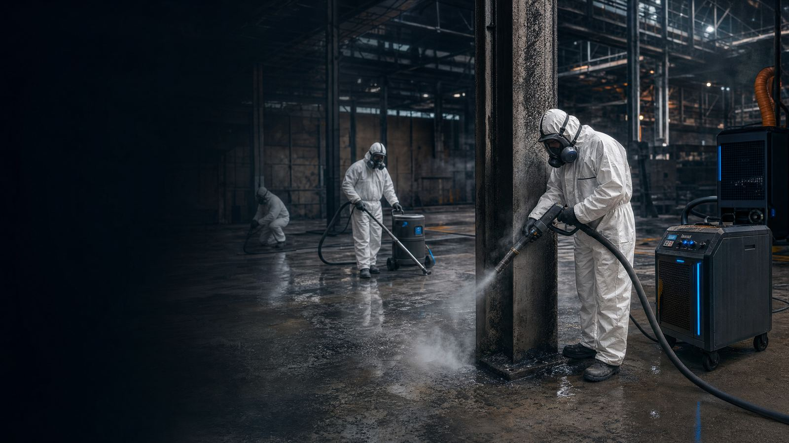
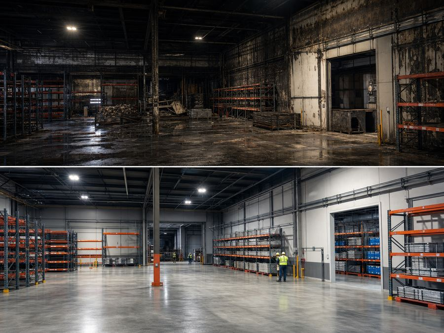
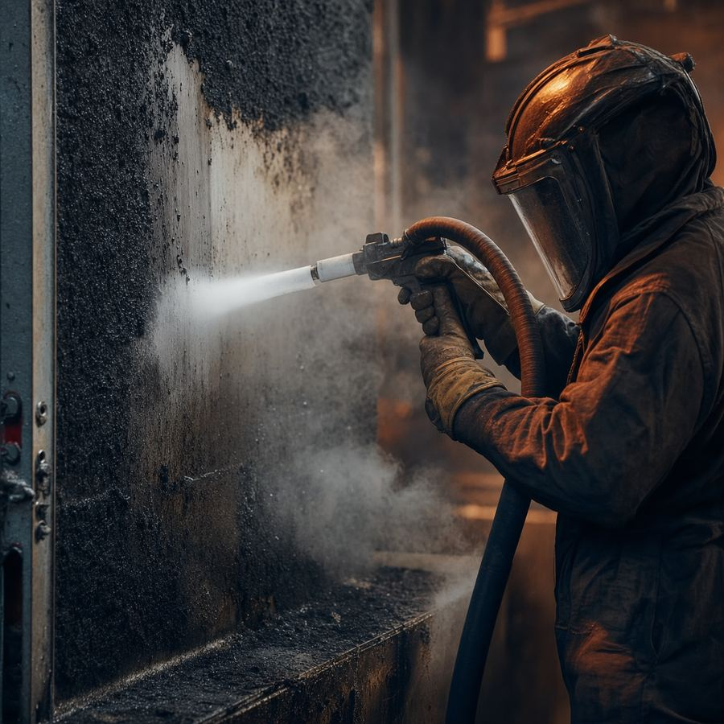

▱
HEPA H14
Filtración de partículas finas y control de aire en espacios afectados.
Limpieza post incendio y descontaminación de humo y hollín para naves, hoteles, comunidades, centros sanitarios, comercios, viviendas y activos críticos. Equipos técnicos, trazabilidad documental y respuesta 24/7.

En cada limpieza de incendios, Galaxia une maquinaria, método y documentación para que la intervención sea defendible ante dirección, seguro y peritación.
Filtración de partículas finas y control de aire en espacios afectados.
Eliminación de hollín en soportes industriales con mínima humedad residual.
Tratamiento preciso en componentes delicados y superficies seleccionadas.
Desodorización controlada tras retirada de carga contaminante.
Nebulización técnica para microzonas, conductos y huecos complejos.
Protección respiratoria, protocolos y trazabilidad documental.
Ajustamos cada protocolo de limpieza post incendio al riesgo del inmueble, desde salas técnicas hasta naves logísticas y hoteles en plena operación.
Protocolos específicos para bares y zonas de ocio con informe técnico, control de olores y reducción de hollín.
Protocolos específicos para bodegas e instalaciones agroalimentarias con informe técnico, control de olores y reducción de hollín.
Protocolos específicos para centros sanitarios y hospitales con informe técnico, control de olores y reducción de hollín.
Protocolos específicos para colegios y centros educativos con informe técnico, control de olores y reducción de hollín.
Protocolos específicos para comercios y tiendas con informe técnico, control de olores y reducción de hollín.
Protocolos específicos para comunidades de propietarios con informe técnico, control de olores y reducción de hollín.
Protocolos específicos para garajes y aparcamientos con informe técnico, control de olores y reducción de hollín.

Intervención con filtración HEPA, retirada de hollín en estructura metálica y coordinación con peritación. Objetivo: evitar contaminación cruzada y preparar reapertura por fases.
Lectura del daño, accesos y riesgos.
Sectorización y protección de zonas no afectadas.
Hollín, residuos y carga olorosa.
HEPA, ozono, fogging o hielo seco según soporte.
Documentación y recomendaciones finales.
Preparamos documentación técnica con fotografías, alcance, fases ejecutadas, observaciones y prioridades de recuperación para facilitar la toma de decisiones.
Acceso peritosEstas imágenes son provisionales generadas para maquetación. Se sustituirán por trabajos reales cuando estén disponibles.


Sí. La documentación se prepara para facilitar valoración de daños y seguimiento de fases.
No. Se aplica solo cuando la retirada de residuos y la seguridad del espacio lo permiten.
Sí. El dimensionamiento se realiza por metros cuadrados, altura, carga de hollín y ventilación.
Depende del alcance. En siniestros pequeños puede bastar una evaluación documental inicial; en siniestros medianos o grandes permite fijar alcance, maquinaria, turnos y riesgos.
No. El presupuesto se emite tras visita técnica o evaluación documental suficiente.
Ahora contiene imágenes provisionales. Se sustituirá por trabajos reales cuando el cliente los facilite.
Sí, cuando el humo o el hollín han entrado en el sistema de aire.
La cobertura se organiza en toda España con prioridad en 25 provincias indicadas en el proyecto.
Atención técnica 24 h en toda España. Estas son nuestras oficinas con presencia física; el teléfono y email son centrales para urgencias en cualquier delegación.
C. de la Fuente del Rey, 12, Moncloa - Aravaca, 28023 Madrid
Av. de Catalunya, 29, 08917 Badalona
C. Periodista Gil Sumbiela, 70, Benicalap, 46025 Valencia
Pl. Capuchinas, 6, 45002 Toledo
C. Menéndez Pelayo, 6, Centro, 14008 Córdoba
C. Álamos, 5, 29601 Marbella
C. La Tinaja, 3, San Benito - Progreso, 30012 Murcia
{kind=link}
{kind=link}